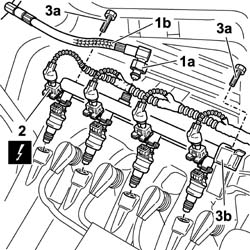

1058A60 single cng manifold pipe complete with injectors - r r
- Path
- Procedures > 10 ENGINE > 1058 CNG FUEL SYSTEM > 1058A gas circuit multi point injection > 1058A60 single cng manifold pipe complete with injectors - r r
- Kind
- repair procedure (removal / refitting; the operation number is the code)
- Applies to
- all engines; all production periods; only with equipment: BIPOWER
- Interactive page
- https://sloeber94.github.io/elrnDB-fDbl/en/#/2584549
Applies to: all engines; all production periods; only with equipment: BIPOWER
 Removing
Removing
 Refitting
RefittingPosition the vehicle on a lift.
Lift the vehicle and set the manual valves located on the CNG cylinders assembly to the closed position.
Drain the low-pressure circuit as described in the relevant operation. 1042A02 C.N.G. - FUEL SYSTEM Safety check
1. Undo the connector (1a) and disconnect the low-pressure flexible pipe (1b).
2. Disconnect the electrical connections for the CNG system injectors.
 | Name | Connector |
|---|---|---|
2 | Methane injector | N72 |
3. Undo the fixing bolts (3a) and remove the fuel manifold (3b) complete with injectors.

Applies to: all engines; all production periods; only with equipment: BIPOWER
Refitting
RemovingFit the fuel manifold on the intake chamber.
Tighten the manifold fixing bolts.
Connect the electrical connections to the injectors.
| Name | Connector |
|---|---|---|
- | Methane injector | N72 |
Connect the low pressure pipe to the manifold and tighten the fixing nut.
 | Fastening | Component | Ø | Value (daNm) |
|---|---|---|---|---|
- | Nut | INJECTOR PRESSURE REDUCTION UNIT PIPE.../.. | - | (on methane manifold) 2 |
Manually set the CNG shut-off solenoids on the cylinders to the open position and check that the system is working.
Remove the vehicle from the lift.
1042A06 C.N.G. - FUEL SYSTEM check for any leaks using electronic detector following operations .